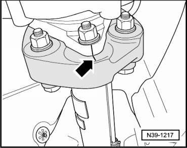
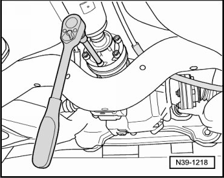
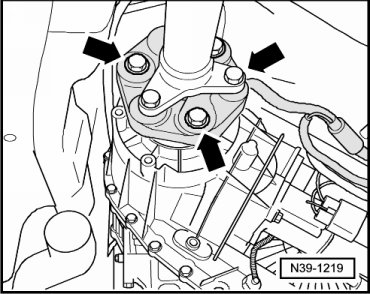
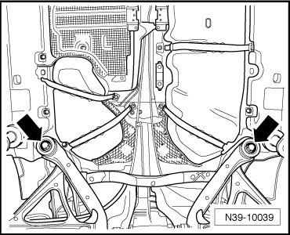
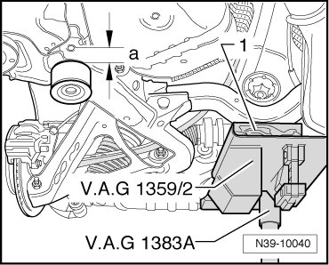
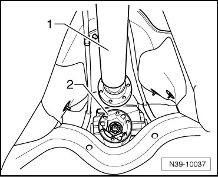
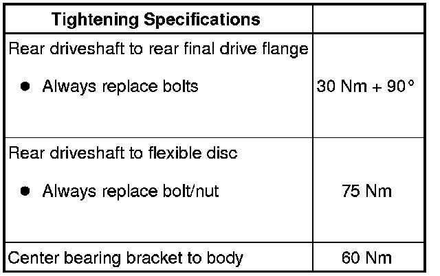

Rear Driveshaft
Rear Driveshaft
Special tools, testers and auxiliary items required
• Torque wrench (VAG 1331)
• Torque wrench (VAG 1332)
• Engine and transmission jack (VAG 1383 A) with universal transmission adapter (1359/2)
• Brake pedal loading device (VAG 1869/2)
A twin-post hoist should be used when working on the rear driveshaft.
Before removing, mark the positions of all parts in relation to each other. Reinstall in the same position otherwise imbalance will be excessive, the bearings could be damaged causing rumbling noises.
If droning noises occur when driving, unbolt rear driveshaft from flange at rear final drive, rotate one hole relative to flange and bolt on again.
If droning noises are still audible, rear driveshaft can be rotated one hole relative to flange a total of 5 times at rear final drive and a total of 2 times at transfer case.
Do not flex rear driveshaft; store only extended with center bearing bracket facing upwards.
Removing
- Select lever position "N" with the selector lever.
- Insert brake pedal depressor (VAG 1869/2).
- Raise vehicle.
- Remove rear part of exhaust system:
- If an underbody impact guard is located beneath the driveshaft, remove it.
- Check whether there is a marking (colored marking) on rear driveshaft and on the rear final drive flange.

- If this marking is not present, then mark in color the position of driveshaft flange - arrow A - to rear final drive - arrow B -.
- Mark the position of the rear driveshaft to the transfer case output flange - arrow -.

- Remove the lower 3 bolts for rear driveshaft at rear final drive.

- Lower vehicle.
- Remove brake pedal depressor (VAG 1869/2).
- Raise vehicle.
- Rotate both rear wheels in the same direction at the same time so that the rear driveshaft rotates 1/2 turn (180 degrees).
- Lower vehicle.
- Insert brake pedal depressor (VAG 1869/2).
- Raise vehicle.
- Remove the remaining 3 bolts for rear driveshaft at rear final drive.
- Remove bolts - arrows - from rear driveshaft at transfer case. For this, counter hold the nuts using an open end wrench.

- Place the engine and transmission holder (VAG 1383 A) with universal transmission adapter (1359/2) under the subframe/rear axle.
- Support the subframe using a wooden block.

- Remove both front bolts - arrows - on subframe.
- Lower the subframe using the engine and transmission holder (VAG 1383 A) by the dimension - a - = 50 mm.

1 Wood block
To avoid damaging rear driveshaft, have a second technician assist in removing rear driveshaft.
- Loosen the bolts - arrows B - for the center bearing at the bracket by approximately 2 turns.

- Unbolt center bearing bracket from body - arrows A -.
- Press off rear driveshaft - 1 - from rear final drive - 2 - and pivot it over the final drive flange.

- Carefully pull off rear driveshaft from centering pin of output flange/transfer case.
- Remove rear driveshaft.
- Set aside rear driveshaft with center bearing bracket facing upwards.
Installing
Install in reverse sequence; note the following points:
Always replace bolts for rear driveshaft.
- Markings - arrow A - and - arrow B - must line up as much as possible.
Seal in rear driveshaft flange at flange/transfer case must not be damaged when removing and installing.

Replace rear driveshaft if damaged.
Do not tip rear driveshaft; push horizontally onto guide shaft.
After loosening a rear driveshaft flange, install center bearing so that it is free of stress. Refer to --> [ Rear Driveshaft Center Bearing ] Rear Driveshaft Center Bearing.
- Install and tighten bolts - arrows - at subframe.
- After installing rear driveshaft, install center bearing so that it is free of stress. Refer to --> [ Rear Driveshaft Center Bearing ] Rear Driveshaft Center Bearing.
- Install rear part of exhaust system:
- Insert bolts for rear driveshaft and tighten to specifications.
- If an underbody impact guard is located beneath the driveshaft, install it.
